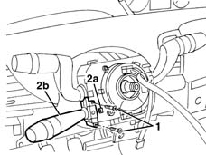
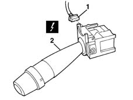

5580A10 cruise control lever assembly - r+r
- Path
- Procedures > 55 ELECTRICAL EQUIPMENT > 5580 SPECIAL ACCESSORIES > 5580A cruise control system > 5580A10 cruise control lever assembly - r+r
- Kind
- repair procedure (removal / refitting; the operation number is the code)
- Applies to
- all engines; all production periods
- Interactive page
- https://sloeber94.github.io/elrnDB-lYpsln/en/#/2429446
Applies to: all engines; all production periods
 Removing
Removing
 Refitting
RefittingPlace the steering wheel in the centred position with the wheels straight.
4110A11 steering wheel - r+r for replacement or check for versions with air bag
7040A26 steering column trim - r+r
1. Undo the bolts.
2. Release retainer (2a) from the tab and move the Cruise Control lever assembly (2b).

Applies to: all engines; all production periods
1. Disconnect the electrical connection.
 | Name | Connector |
|---|---|---|
1 | Cruise Control |
2. Recover the Cruise Control assembly lever.

Applies to: all engines; all production periods
Refitting
RemovingCheck that the lever is undamaged.
Connect the electrical connection and position the lever by engaging the retainer.
Tighten the bolts.
7040A26 steering column trim - r+r
4110A11 steering wheel - r+r for replacement or check for versions with air bag
Check that the Cruise Control device works properly.